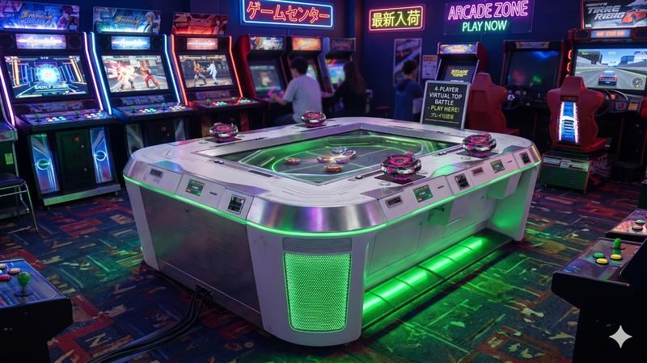
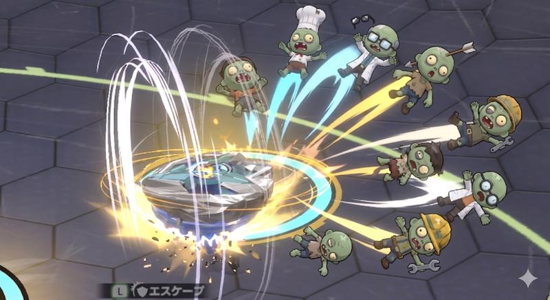
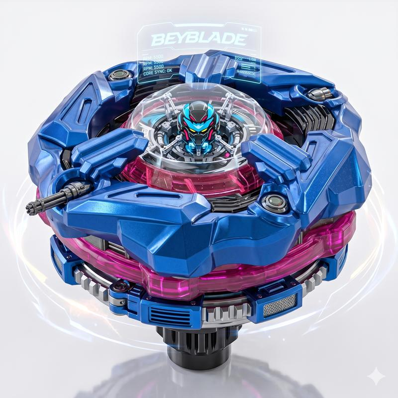
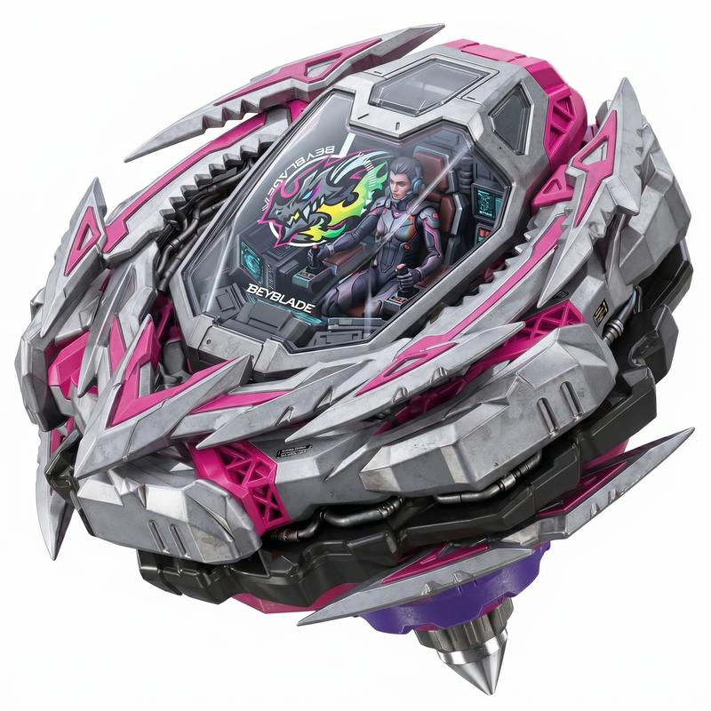
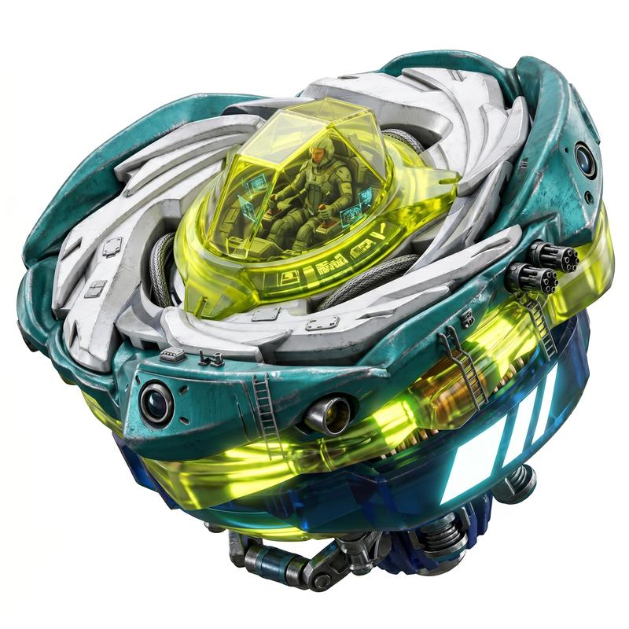
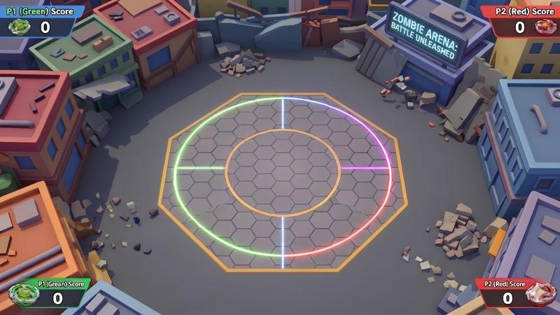
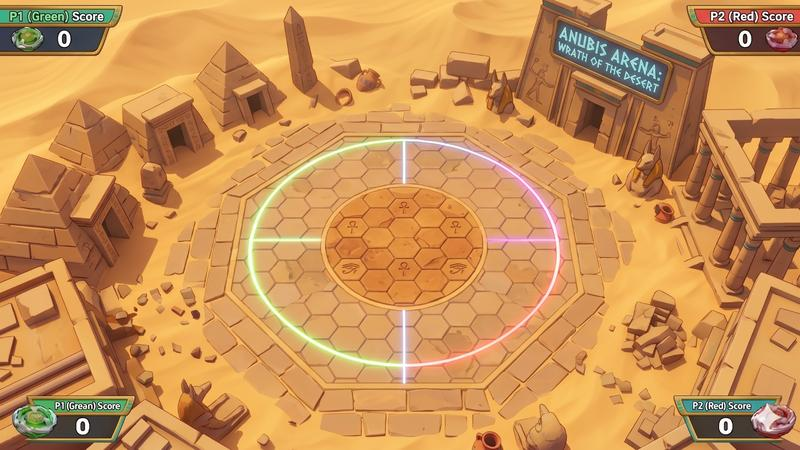
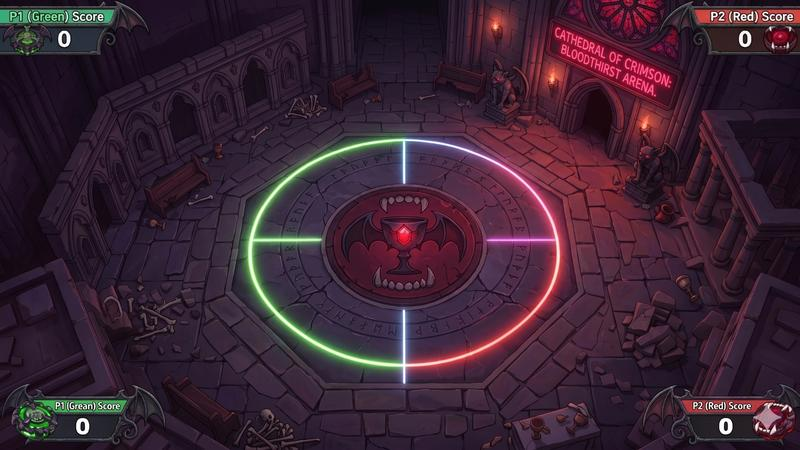
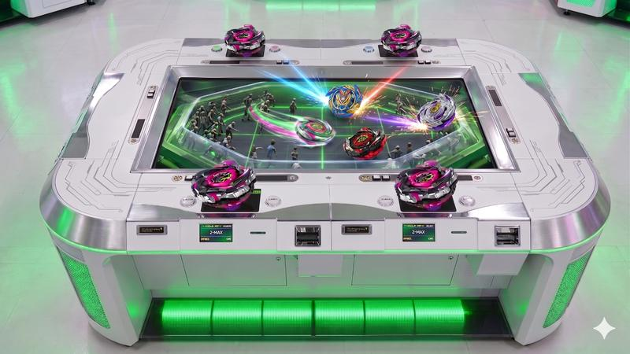
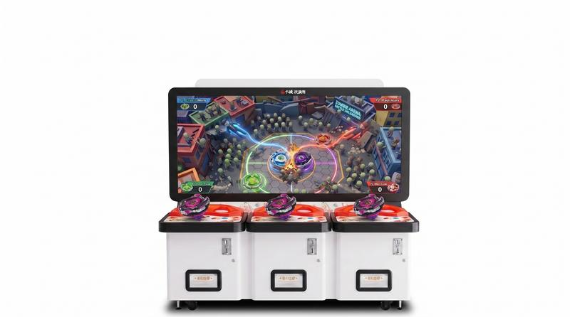

基於「桑比槍台調整方向_ASI」企劃，沿用現有素材與人力評估


| 類別 | 項目 | 數量 | 工作性質 |
|---|---|---|---|
| 角色 | 陀螺機甲（可玩角色） | 4~6 隻 | 全新設計 |
| 機甲駕駛員 | 4~6 隻 | 全新設計 | |
| 殭屍敵人/場景角色 | 12~16 隻 | 沿用改造 | |
| BOSS | 3 隻 | 沿用+重度改造 | |
| 場景 | 戰鬥場地圖（俯視角） | 3 張 | 全新製作 |
| 場景機關/障礙物 | 每張 5~8 種 | 全新製作 | |
| 場景道具（強化/召喚） | 8~10 種 | 全新製作 | |
| 特效 | 陀螺移動/碰撞特效 | 10~15 種 | 全新製作 |
| 超級技能特效 | 16~24 種（4角色×4技能） | 全新製作 | |
| 場景/UI 特效 | 10~15 種 | 全新製作 | |
| UI | 全套介面 | ~10 頁面 | 全新設計 |
| 機台 | 框體外觀+控制器造型 | 1 套 | 全新設計 |
| 音樂/音效 | BGM + SFX | 3 首 + 60~80 個 | 全新外包 |
| 用途 | 沿用方式 | 數量 | 改造程度 |
|---|---|---|---|
| 殭屍敵人（場上障礙） | 直接沿用調色 | 10~12 隻 | 輕度 調色+去血腥+加搞笑元素 |
| BOSS | 放大改造現有角色 | 3 隻 | 重度 大幅改造+新配件+新動畫 |
| 裝飾性角色（觀眾/背景） | 沿用調色+簡單動畫 | 3~4 隻 | 輕度 調色+加觀眾配件 |
| 功能性角色（NPC/提示） | 沿用改造 | 2~3 隻 | 中度 改造+加職業標誌 |
| 備用/後續更新 | — | 1~2 隻 | — |



| 項目 | 沿用性 | 說明 |
|---|---|---|
| 場景模型 | ❌ 無法沿用 | 舊場景是插片模型（固定視角射擊用），新遊戲需要俯視角 3D 碰撞場地 |
| 材質貼圖 | ⭐⭐ 部分可用 | 金屬/石材/地面材質調色後可用，省 15~25% 貼圖工時 |
| 主題概念 | ⭐⭐ 部分可用 | 「末日城市」「黑暗莊園」可延伸自舊場景概念 |
| 模組化邏輯 | ⭐⭐⭐ 可用 | 場景拆分方式直接參考 |



| 項目 | 沿用性 | 說明 |
|---|---|---|
| 特效 | ❌ 無法沿用 | 陀螺旋轉/碰撞/技能演出全為新概念，需全新製作 |
| UI | ❌ 無法沿用 | 全新互動模式（陀螺選擇/技能HUD/積分面板），需全新設計 |
| 項目 | 全重做方案 | 沿用優先方案 | 節省 |
|---|---|---|---|
| 敵人/BOSS/裝飾角色 | 18~22 隻全新 | 沿用 20 隻改造 | 60~70% |
| 敵人骨架綁定 | 全新綁定 | 沿用現有骨架 | 100% |
| 場景貼圖 | 全新繪製 | 部分沿用調色 | 15~25% |
| 玩家角色（駕駛員+機甲） | 全新 | 全新（無現有資源） | 0% |
| 特效/UI | 全新 | 全新（無現有資源） | 0% |


| 人員 | 本案主要職責 | 預估工時 |
|---|---|---|
| 美術負責人 | 陀螺機甲概念設計、駕駛員角色設計、風格定義、外包監修、控制器造型 | 75~100 天 |
| 3D 美術 | 陀螺機甲建模、敵人角色改造、3 張場景建模 | 85~115 天 |
| 2D 美術 | UI 設計+監修、材質繪製、框體平面設計 | 65~90 天 |
| 月份 | 里程碑 |
|---|---|
| M1 | 陀螺機甲概念設計 + 駕駛員角色設計 + 風格定義 + 控制器造型初稿 |
| M2 | 機甲建模完成 + 駕駛員建模 + 敵人角色改造開始 + 場景1開工 + 外包發包 |
| M3 | 敵人改造完成 + 場景1完成 + 機甲綁定+動畫 + 技能特效開始 |
| M4 | 場景2完成 + 技能特效大量交付 + UI 主流程 + 搭乘演出 |
| M5 | 場景3完成 + 所有特效完成 + BOSS 完成 |
| M6 | 品質打磨 + 效能優化 + 整合測試 |
| M7 | 機台上機調色 + 控制器整合 + 版本封存 |
| M8 | 緩衝期 / 額外打磨 |
| 項目 | 數量 | 預估費用（NT$） |
|---|---|---|
| 陀螺機甲綁定+動畫 | 4~6 隻 × 8~10 組動作 | 300K~500K |
| 駕駛員角色綁定+搭乘動畫 | 4~6 隻 | 80K~150K |
| 敵人/BOSS 動畫 | 20~30 組 | 100K~180K |
| 超級技能特效 | 16~24 種 | 200K~360K |
| 碰撞/場景特效 | 20~30 種 | 150K~250K |
| UI 設計+製作（80%外包） | 10 頁面+動態 | 200K~350K |
| 音樂 BGM | 3 首 | 60K~100K |
| 音效 SFX | 60~80 個 | 50K~100K |
| 總計 | 1,140K~1,990K |
| 風險項目 | 等級 | 說明 | 緩解方式 |
|---|---|---|---|
| 陀螺機甲設計迭代 | 高 | 全新概念，可能需多次修改確定造型 | M1 快速出 3~5 個概念方案選擇 |
| 駕駛員角色設計 | 中 | 全新角色需要建立風格統一性 | 先確定一隻作為基準再擴展 |
| 俯視角場景複雜度 | 中 | 需支援碰撞+機關互動 | 減少場景數量（3張），聚焦品質 |
| 技能特效數量龐大 | 中 | 16~24 種技能特效是最大外包量 | 建立特效模板，部分技能共用基底 |
| 控制器造型配合機構 | 中 | 外觀設計需配合內部機構尺寸 | 機構先行確認尺寸，美術在限制內設計 |
| 3D 美術工時吃緊 | 高 | 機甲建模+場景共 85~115 天 | 機甲建模可部分外包 |